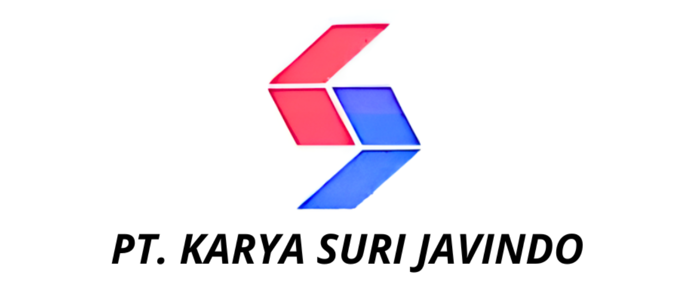
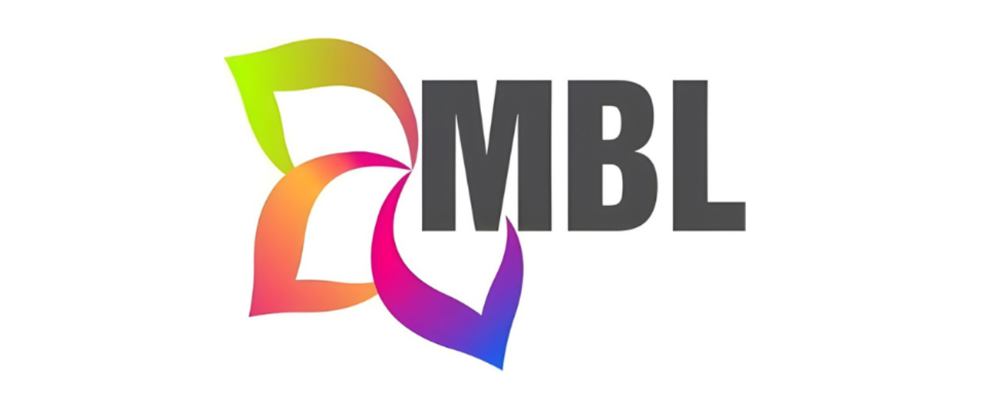

Jadwal Imsakiyah
Ramadhan 1447 H / 2026 M
Lokasi Tidak Terdeteksi
Metode Hisab Kemenag RI • Awal Ramadhan: Kamis, 19 Februari 2026
Metode Hisab Kemenag RI • Awal Ramadhan: Kamis, 19 Februari 2026
| Tanggal | Masehi | Imsak | Subuh | Zuhur | Ashar | Maghrib | Isya |
|---|
*Jadwal ini dihitung secara otomatis berdasarkan koordinat lokasi Anda.